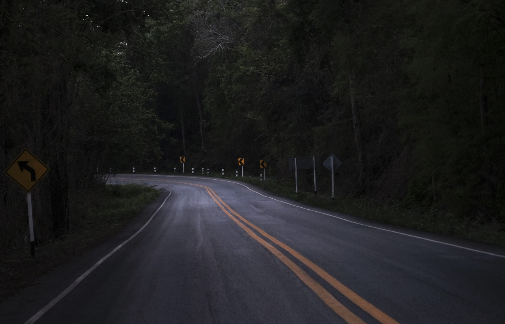

Você está em uma floresta silenciosa e sombria, no meio do nada pois se perdeu de casa. E você tem duas escolhas:
Ai sim você é corajosa(o). Porém enquanto você estava anadando achou uma casa iluminada. Agora você decide:
Opa ficar parado é uma opção de covarde
Você entrou na casa e viu que não tinha ninguém morando nela. Porém havia muitos barulhos estranhos lá. Então decidiu;
Você optou por ignorar a casa, então você perdeu. GAME OVER!
Qundo você dicidiu andar avistou uma casa com iluminação
Qundo vovê chegou na casa viu que não havia niguém morando nela, então decide ficar por lá. Porém começou a escutar baralhos estranhos. Você tem duas opções:
Você dicidiu sair da casa e procurar a saída da floresta
Você dicidiu continuar na casa e explorar esses barulhos.
Agora você tem história para contar!
Ao procurar a saída